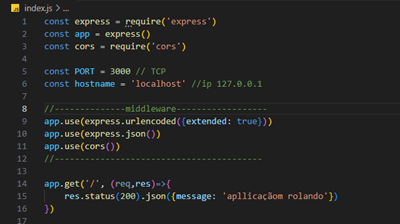
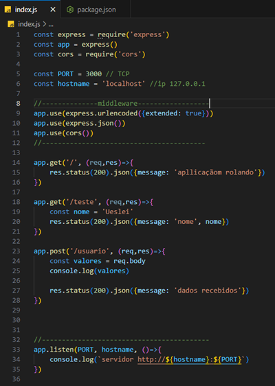
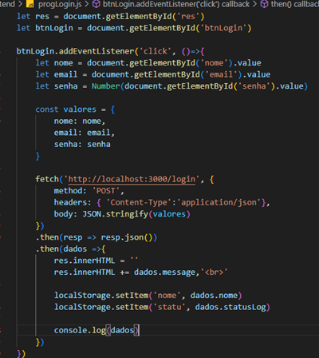
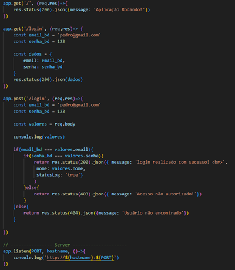
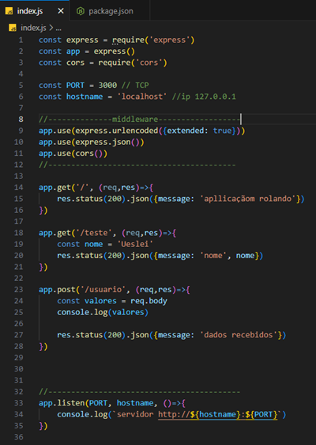
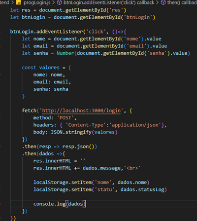
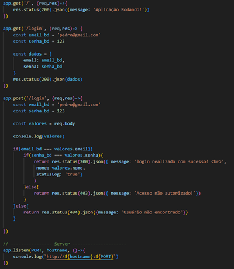
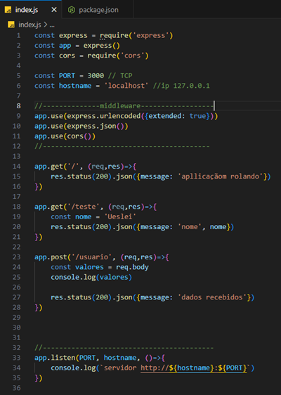
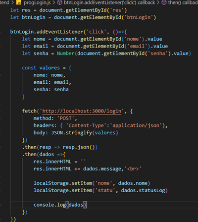
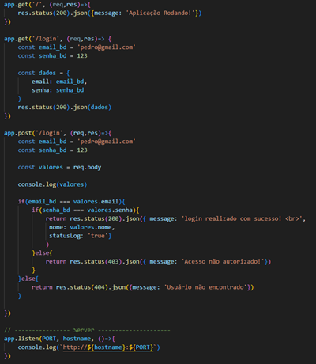

Como é configurado o IP e o TCP em uma programação backend com node.js?

codigos back-end e front-end que se conversam
 





Bem-vindo!
Professor:Carlos Roberto
Redes de Computadores são conjuntos de dispositivos interligados — como computadores, celulares e servidores — que trocam informações e compartilham recursos. Elas permitem comunicação, acesso à internet, compartilhamento de arquivos e uso de serviços remotos. Uma rede é formada por dispositivos finais, meios de transmissão (como cabos e Wi-Fi), equipamentos de rede (roteadores e switches) e protocolos que organizam a comunicação, já Rede mínima é a forma mais simples de uma rede de computadores, composta por apenas dois ou poucos dispositivos conectados diretamente. Ela permite a troca básica de informações entre esses equipamentos, usando cabos ou conexão sem fio.
A internet é uma rede mundial que conecta milhões de dispositivos para permitir comunicação e troca de informações. Ela é composta por infraestrutura física (como cabos, servidores e satélites), pelos dispositivos conectados, pelos protocolos que organizam a comunicação (como TCP/IP e HTTP) e pelos serviços utilizados, como sites, e-mails, redes sociais e streaming.
A Web (World Wide Web) é um sistema de páginas e conteúdos acessados pela internet por meio de navegadores. Ela funciona através de links, sites e documentos que usam linguagens como HTML, CSS e JavaScript. A Web é apenas uma parte da internet — outros serviços, como e-mail e FTP, também fazem parte da internet, mas não da Web.
O mapa de fibra óptica mostra as rotas dos cabos submarinos e terrestres que conectam países e continentes, formando a infraestrutura física da internet. Esses cabos transportam quase todo o tráfego mundial de dados e revelam onde estão os pontos de conexão globais. Componentes de uma rede Wi-Fi: modem (recebe o sinal do provedor), roteador Wi-Fi (distribui o sinal sem fio), access point (amplia a cobertura), switch (opcional, conecta dispositivos por cabo), antenas (transmitem e recebem o sinal), placas de rede Wi-Fi dos dispositivos e repetidores (reforçam o alcance).
Componentes de hardware de uma rede local com cabo de rede: Uma rede local cabeada é formada por equipamentos que permitem a comunicação por meio de cabos Ethernet. Seus principais componentes são: modem (recebe o sinal do provedor), roteador (distribui a rede e cria sub-redes), switch (interliga vários dispositivos por cabo), cabos de rede Ethernet, conectores RJ-45, patch panel (opcional, organiza os cabos), tomadas de rede, placas de rede (NIC) nos computadores e servidores ou dispositivos finais que utilizam a conexão.
Um protocolo de comunicação é um conjunto de regras que define como dois ou mais dispositivos trocam informações em uma rede. Ele organiza como os dados são enviados, recebidos, interpretados e confirmados, garantindo que todos os equipamentos se comuniquem de forma correta e segura. Exemplos incluem TCP/IP, HTTP, HTTPS e FTP.
O modelo OSI é um padrão teórico que divide a comunicação em redes em 7 camadas (Física, Enlace, Rede, Transporte, Sessão, Apresentação e Aplicação). Ele organiza as funções da comunicação para facilitar o entendimento, o estudo e o desenvolvimento de tecnologias de rede. O modelo TCP/IP é um modelo prático utilizado na internet, composto por 4 camadas (Acesso à Rede, Internet, Transporte e Aplicação). Ele descreve como os dados são enviados e recebidos entre dispositivos reais, sendo a base de funcionamento da rede mundial.
O protocolo IPv4 é a versão mais antiga e ainda mais utilizada para identificar dispositivos em uma rede. Ele usa endereços numéricos de 32 bits, como 192.168.0.1, permitindo cerca de 4 bilhões de endereços. Por causa do crescimento da internet, esse espaço tornou-se limitado. O protocolo IPv6 é a versão mais nova, criada para substituir o IPv4. Ele usa endereços de 128 bits, como 2001:0db8:85a3::8a2e:0370:7334, oferecendo uma quantidade praticamente ilimitada de endereços, além de melhorias em segurança e desempenho.
O protocolo HTTP é um conjunto de regras usado para transmitir páginas e informações entre navegadores e servidores na Web. Ele permite acessar sites, porém não criptografa os dados enviados. O protocolo HTTPS é a versão segura do HTTP. Ele utiliza criptografia para proteger as informações durante a comunicação, garantindo mais segurança e privacidade ao acessar sites, especialmente aqueles que envolvem senhas e dados sensíveis.
Um exemplo de framework para programar usando o protocolo HTTP com Node.js é o Express.js. Ele facilita a criação de servidores web, rotas HTTP, APIs e sistemas completos, tornando o desenvolvimento mais rápido e organizado.


